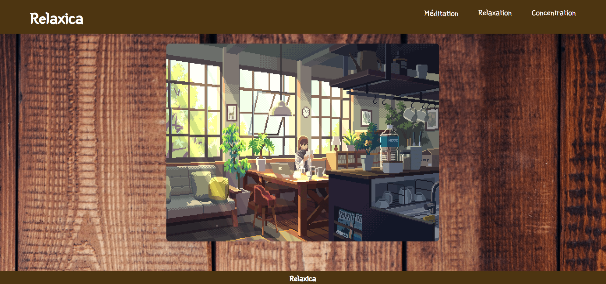

Project 2022/2023
-
Projet Candy Store

Lien Github : https://github.com/bulle-creator/Candy_Store
Lien : https://bulle-creator.github.io/Candy_Store/
Pour ce projet j'ai voulu faire un site vitrine, pour un café spécialisée dans les sucreries. Le café s'appele Candy Store et vende des boissons, des glaces et gâteaux. La particularité du café et que les menus sont inspirés des couleurs.
Projet Relaxica

Lien Github : hhttps://github.com/bulle-creator/Relaxica
Lien : https://bulle-creator.github.io/Relaxica/
Relaxica est un site web que j'utilise pour me concentrer, il diffuse simplement de la musique.
Relaxica à un petit probléme, les fichier audio étant trop lourd sur les musique sur le site actuelle sont raccourcit. Pour avoir les musiques originales du site il faut aller sur GitHub et lire le README il y aura les liens.
Projet UPEC Reprographie

Lien Github : https://github.com/bulle-creator/Tableau-de-relever-compteur
L’entreprise CodeAlpha s’est spécialisée dans la production de produits à destination des centrales nucléaires, des laboratoires de physique, des universités, etc... Elle doit gérer les présences de son personnel, techniciens, ingénieurs, responsables, etc. dans des salles sous contraintes liées à la radioactivité. Actuellement, elle utilise des lecteurs de cartes magnétiques à l’entrée de ses salles, permettant une remontée des informations dans une application tiers avec enregistrement dans un fichier de type tableur. Elle désire remplacer, pour une meilleure gestion des accès, les lecteurs de cartes magnétiques par des lecteurs de QR Code à l’entrée des salles avec un traitement par une application NodeJS interne.